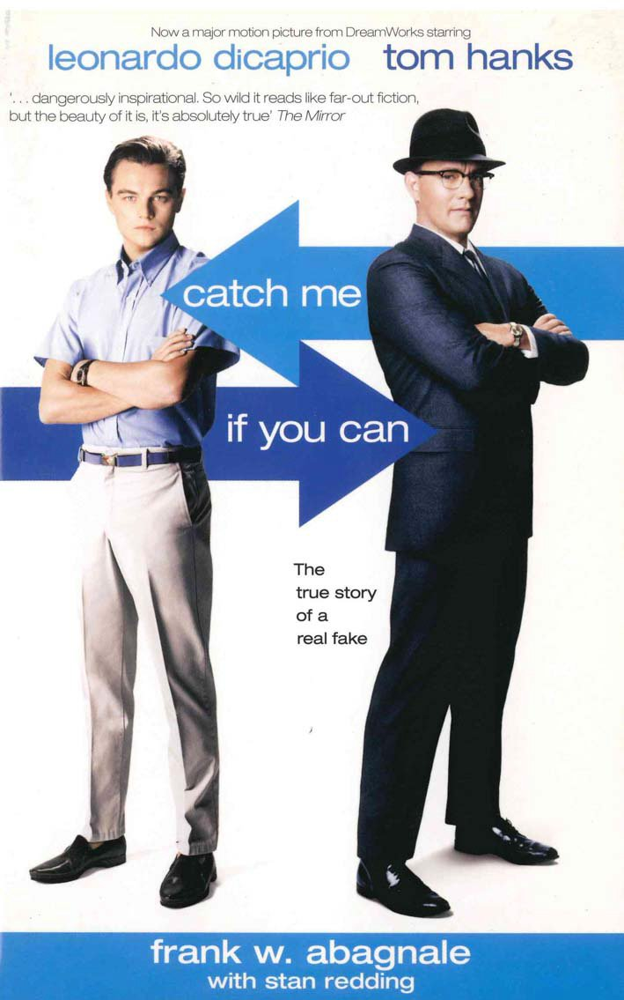

Handlung
Frank Abagnale, Jr. (Leonardo DiCaprio) arbeitete als Arzt, Anwalt und Co-Pilot bei einer großen Fluggesellschaft - und das alles vor seinem 18. Geburtstag. Als Meister der Täuschung war er auch ein brillanter Fälscher, dessen Fähigkeiten ihm seinen ersten echten Ruhm einbrachten: Im Alter von 17 Jahren wurde Frank Abagnale Jr. zum erfolgreichsten Bankräuber in der Geschichte der USA. FBI-Agent Carl Hanratty (Tom Hanks) macht es sich zur Hauptaufgabe, Frank zu fassen und vor Gericht zu bringen, aber Frank ist ihm immer einen Schritt voraus.

BFTA Award
Bester Nebendarsteller
Grammy
Beste Filmmusik
SAG Award
Bester Nebendarsteller
Catch Me If You Can
Altersfreigabe: FSK 6 (Teilweise sexueller Content und teils anmaßende Sprache)
Genre: Comedy, Drama, Crime
Original Ton: Englisch
Regisseur: Steven Spielberg
Produzenten: Steven Spielberg, Walter F. Parkes
Drehbuchautoren: Jeff Nathanson, Frank Abagnale Jr., Stan Redding
Release Date: 25 Dezember 2002, Weltweit
Budget: 52 Millionen Dollar
Box Office: 352 Millionen Dollar
Laufzeit: 2h 20min
Verleger: DreamWorks SKG
Produktionsfirmen: Amblin Entertainment, DreamWorks SKG, Parkes/MacDonald, Splendid Pictures